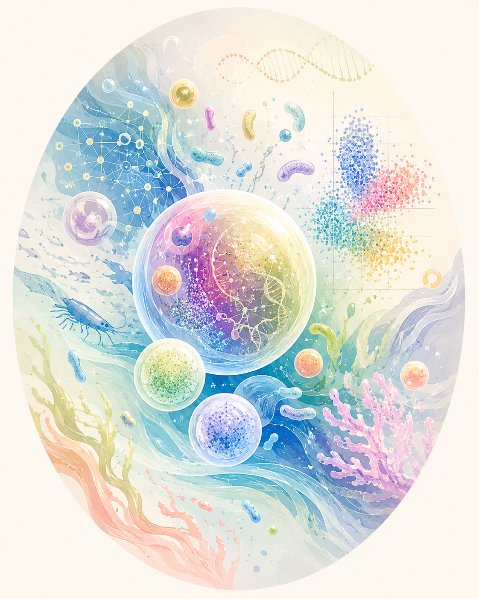

Microbiome
Understanding microbial communities and their dynamics.
NGOC MINH NGAN BUI
I work at the intersection of microbiome science, flow cytometry, microbial ecology, and machine learning — turning complex biological data into practical insights for real-world applications.

Microbiome × Data × Biology Vietnam ↔ BelgiumI'm an aquaculture researcher and R&D team leader specialising in microbiome management. My work combines flow cytometry, 16S rRNA sequencing, bioinformatics, and machine learning to understand host–microbiome and microbe–microbe interactions.
I sit between academia and industry by choice — moving between fundamental biological questions, laboratory research, and tools people actually use in the field.
Understanding microbial communities and their dynamics.
Capturing microbial phenotypes at single-cell resolution.
Profiling microbial community composition.
Turning sequencing data into biological insight.
Building predictive models from complex biological data.
Applying science to improve aquatic production systems.
I combine flow cytometry, 16S rRNA sequencing, bioinformatics, and machine learning to turn microbial community dynamics into decision-ready tools for aquaculture.